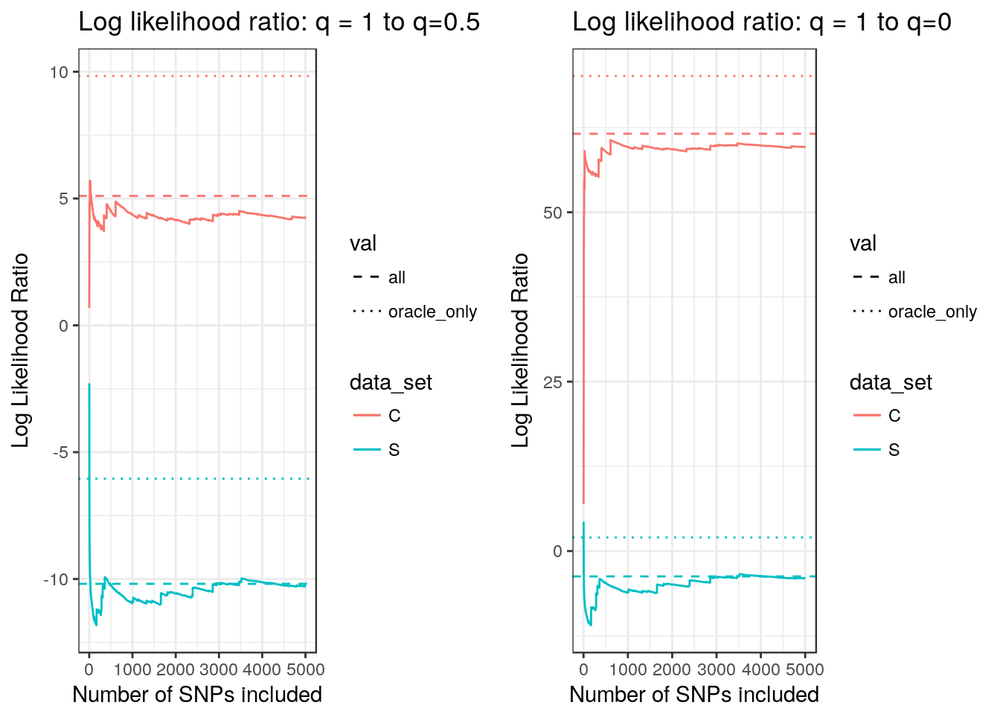
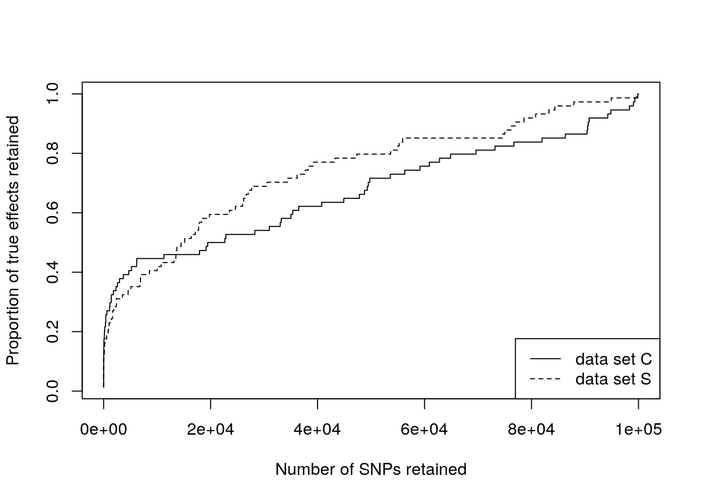
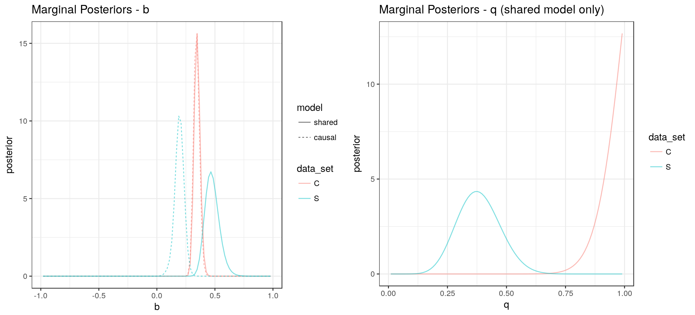
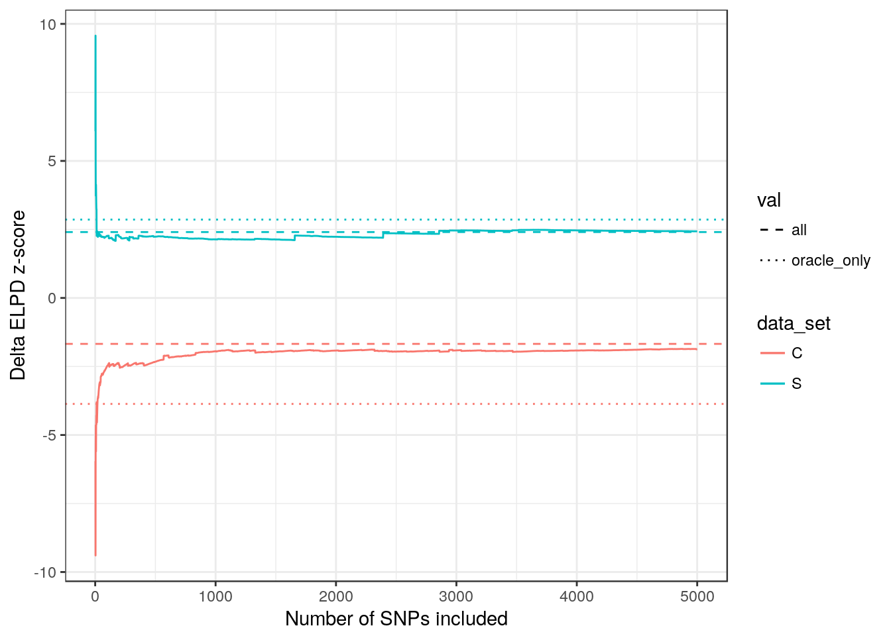
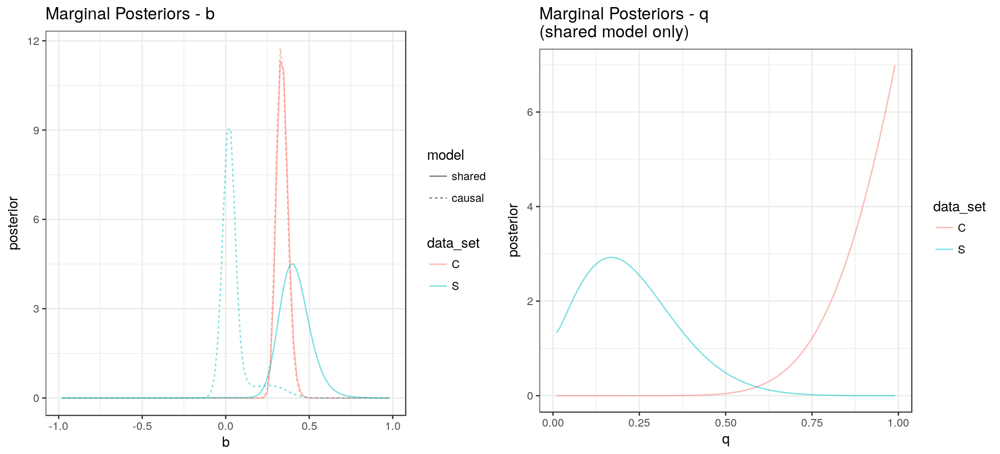
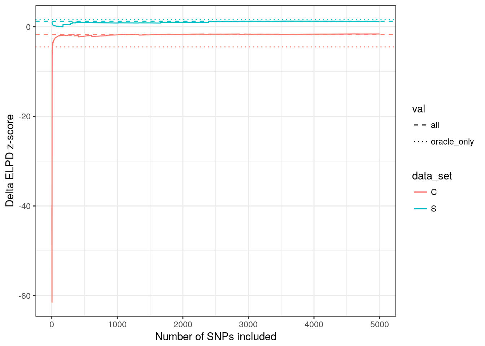
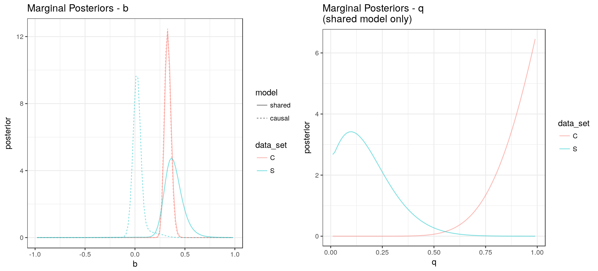
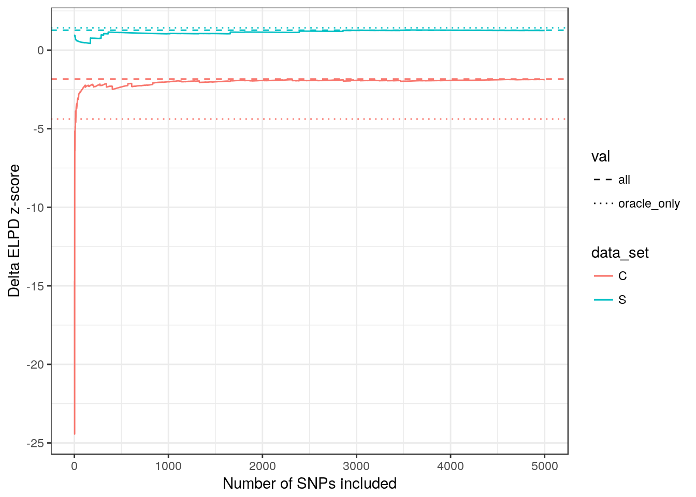

My goal is to understand two questions:
Given a decent estimate of the posterior distributions of \(b\) and \(q\), can I use only a subset of SNPs to estimate the difference in ELPD between the shared and causal models.
Can I get a reasonable estimate of the posterior using only a subset of SNPs
In both cases, I am interested in subsetting SNPs using \(p\)-values from the first trait.
In these experiments, I will use two simluted data sets. Both have 100,000 SNPs. Data set S is generated under the shared model with \(q=0.5\) and \(b=0.4\). Data set C genrated under the causal model with \(q=1\) and \(b=0.4\).
First we assume the value of \(b\) is known. We look at log likelihood ratios comparing \(q=1\) to \(q=0.5\) and \(q=1\) to \(q=0\).
order_s <- with(draw_s$dat, order(abs(beta_hat_1/seb1), decreasing = TRUE))
order_c <- with(draw_c$dat, order(abs(beta_hat_1/seb1), decreasing = TRUE))
df_q1_q0.5 <- data.frame(
n = (1:100000),
"S" = with(s_ll[order_s,] , cumsum(q1-q0.5)),
"C" = with(c_ll[order_c,] , cumsum(q1-q0.5))
)
df_q1_q0 <- data.frame(
n = (1:100000),
"S" = with(s_ll[order_s,] , cumsum(q1-q0)),
"C" = with(c_ll[order_c,] , cumsum(q1-q0))
)
df_long <- gather(df_q1_q0.5, "data_set", "ll_ratio", -n)
df_lines <- data.frame(data_set = rep(c("C", "S")), val=rep(c("oracle_only", "all"), each=2), "llr" = NA)
df_lines$llr[ df_lines$data_set=="S" & df_lines$val=="oracle_only"] <- with(s_ll, sum((q1-q0.5)[s_oracle_ix]))
df_lines$llr[ df_lines$data_set=="C" & df_lines$val=="oracle_only"] <- with(c_ll, sum((q1-q0.5)[s_oracle_ix]))
df_lines$llr[ df_lines$data_set=="S" & df_lines$val=="all"] <- with(s_ll, sum(q1-q0.5))
df_lines$llr[ df_lines$data_set=="C" & df_lines$val=="all"] <- with(c_ll, sum(q1-q0.5))
plt1 <- ggplot(df_long) + geom_line(aes(x=n, y=ll_ratio, color=data_set)) +
geom_hline(data = df_lines, aes(yintercept=llr, color=data_set, linetype=val)) +
scale_linetype_manual(values=2:3) +
ggtitle("Log likelihood ratio: q = 1 to q=0.5") +
labs(x="Number of SNPs included", y="Log Likelihood Ratio") +
theme_bw()
df_long <- gather(df_q1_q0, "data_set", "ll_ratio", -n)
df_lines <- data.frame(data_set = rep(c("C", "S")), val=rep(c("oracle_only", "all"), each=2), "llr" = NA)
df_lines$llr[ df_lines$data_set=="S" & df_lines$val=="oracle_only"] <- with(s_ll, sum((q1-q0)[s_oracle_ix]))
df_lines$llr[ df_lines$data_set=="C" & df_lines$val=="oracle_only"] <- with(c_ll, sum((q1-q0)[s_oracle_ix]))
df_lines$llr[ df_lines$data_set=="S" & df_lines$val=="all"] <- with(s_ll, sum(q1-q0))
df_lines$llr[ df_lines$data_set=="C" & df_lines$val=="all"] <- with(c_ll, sum(q1-q0))
plt2 <- ggplot(df_long) + geom_line(aes(x=n, y=ll_ratio, color=data_set)) +
geom_hline(data = df_lines, aes(yintercept=llr, color=data_set, linetype=val)) +
scale_linetype_manual(values=2:3) +
ggtitle("Log likelihood ratio: q = 1 to q=0") +
labs(x="Number of SNPs included", y="Log Likelihood Ratio") +
theme_bw()
grid.arrange(plt1 + scale_x_continuous(limits=c(0, 5000)),
plt2 + scale_x_continuous(limits=c(0, 5000)) , ncol=2)Warning: Removed 190000 rows containing missing values (geom_path).
Warning: Removed 190000 rows containing missing values (geom_path).
In both data sets, with a small number of SNPs (1 or 2% of the top trait 1 SNPs) we can do a good job of approximating the log likelihood ratio we would obtain with all the SNPs. Horizontal lines show the log likelihood ratio we would obtain using only the SNPs for which the true trait 1 effect size is not zero (which we will call the “oracle” SNP set). Note that when we include the top few percent of SNPs, we retain fewer than half of the true trait 1 effect SNPs. The plot below shows the number of SNPs retained vs the proprtion of true effect SNPs retained (both data sets contain 74 trait 1 effects). SNPs in both data sets have the same trait 1 effects so the difference between these two lines is due to stochasitic differences in \(\hat{\beta}_1\).

Now we consider comparing the ELPD under the causal model to the ELPD under the shared model. For the causal model, we use the data to estimate the posterior distribution of \(b\). For the shared model we estimate the posteriors of \(b\) and \(q\).
We start with the best possible posterior distribution we can get from these data. To estimate the “oracle” posterior, we use only SNPs with non-zero true effects on trait 1 and we assume we know the joint distribution of direct effects on trait 1 and trait 2. We also assume we know \(\rho=0\).
The plots below show the marginal posterior distributions of \(b\) and \(q\) from the shared models and the posterior of \(b\) from the causal model.
seed: 730629891
Model 2.
Model 3.seed: 200198259
Model 2.
Model 3.
We now estimate the difference in ELPD from these two posterior distributions using subsets of the SNPs. The plots below show the \(z\)-score for the change in ELPD between the causal model and the shared model using only a subset of SNPs (number of SNPs included on horizontal axis). The dotted lines show the \(z\)-scores we would obtain using only the true trait 1 effect SNPs. The dashed line shows the \(z\)-score obtained using all SNPs. In this plot, positive \(z\)-scores are evidence for the shared model and negative \(z\)-scores are evidence for the causal model.
Warning: Removed 2 rows containing missing values (geom_path).
We find that we can approximate the delta ELPD \(z\)-score that we would obtain from the full set of SNPs using a few thousand of the top SNPs. Data set S shows strong evidence in favor of the shared model as we expect. Data set C shows evidence in favor of the causal model – \(z\)-score of -1.68 using all SNPs. This \(z\)-score is not larger because the posterior for \(q\) is very close to 1 and the posteriors for \(b\) are very similar under the two models. This makes the posterior distribution under the shared model for data set C look very similar to the posterior under the causal model.
Now we consider the posteriors that we would get using all the SNPs and without knowing the true joint distribution of direct effects on traits 1 and 2.

These posteriors differ from the posteriors calculated using only the true trait 1 effects in a few ways:
Using these priors to calculate \(\Delta\) ELPD \(z\)-scores gives the following results:
Warning: Removed 2 rows containing missing values (geom_path).
Now we estimate the posteriors using only the top 1000 SNPs. We still assume we know the joint distribution of direct effects.
seed: 810103962
Model 2.
Model 3.seed: 310111347
Model 2.
Model 3.
Warning: Removed 2 rows containing missing values (geom_path).
Data set S| snp_set | oracle | all | top |
|---|---|---|---|
| Oracle | 2.859767 | 1.6402168 | 1.419499 |
| All | 2.404318 | 1.2231396 | 1.270381 |
| Top 1% | 2.138711 | 0.8368595 | 1.046690 |
Data set C| snp_set | oracle | all | top |
|---|---|---|---|
| Oracle | -3.866599 | -4.490976 | -4.381549 |
| All | -1.675814 | -1.696810 | -1.835314 |
| Top 1% | -1.944962 | -1.807492 | -2.008867 |
sessionInfo()R version 3.4.1 (2017-06-30)
Platform: x86_64-pc-linux-gnu (64-bit)
Running under: Ubuntu 17.04
Matrix products: default
BLAS: /usr/lib/libblas/libblas.so.3.7.0
LAPACK: /usr/lib/lapack/liblapack.so.3.7.0
locale:
[1] LC_CTYPE=en_US.UTF-8 LC_NUMERIC=C
[3] LC_TIME=en_US.UTF-8 LC_COLLATE=en_US.UTF-8
[5] LC_MONETARY=en_US.UTF-8 LC_MESSAGES=en_US.UTF-8
[7] LC_PAPER=en_US.UTF-8 LC_NAME=C
[9] LC_ADDRESS=C LC_TELEPHONE=C
[11] LC_MEASUREMENT=en_US.UTF-8 LC_IDENTIFICATION=C
attached base packages:
[1] stats graphics grDevices utils datasets methods base
other attached packages:
[1] knitr_1.16 cumstats_1.0 gridExtra_2.2.1 sherlockAsh_0.1.0
[5] ggplot2_2.2.1 tidyr_0.6.3
loaded via a namespace (and not attached):
[1] Rcpp_0.12.13 highr_0.6 compiler_3.4.1
[4] plyr_1.8.4 iterators_1.0.8 tools_3.4.1
[7] digest_0.6.12 MHadaptive_1.1-8 evaluate_0.10
[10] tibble_1.3.1 gtable_0.2.0 lattice_0.20-35
[13] rlang_0.1.1 Matrix_1.2-10 foreach_1.4.3
[16] DBI_0.6-1 yaml_2.1.14 parallel_3.4.1
[19] loo_1.1.0 dplyr_0.5.0 stringr_1.2.0
[22] stats4_3.4.1 rprojroot_1.2 grid_3.4.1
[25] R6_2.2.1 rmarkdown_1.6 ashr_2.1-27
[28] magrittr_1.5 backports_1.1.0 scales_0.4.1
[31] codetools_0.2-15 htmltools_0.3.6 matrixStats_0.52.2
[34] MASS_7.3-47 assertthat_0.2.0 colorspace_1.3-2
[37] numDeriv_2016.8-1 labeling_0.3 stringi_1.1.5
[40] RcppParallel_4.3.20 lazyeval_0.2.0 munsell_0.4.3
[43] doParallel_1.0.11 pscl_1.5.1 truncnorm_1.0-7
[46] SQUAREM_2016.8-2 This R Markdown site was created with workflowr